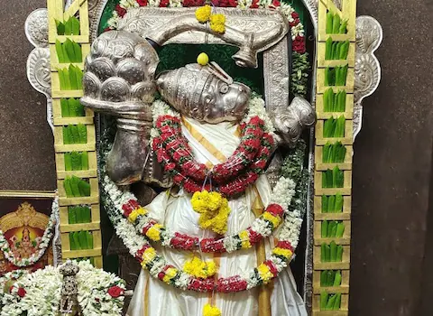
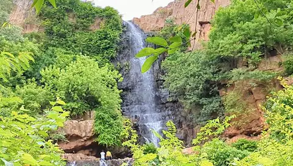
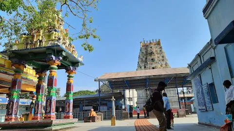

Kadapa
Tourism
Welcome to Kadapa Tourism
Discover the beauty of Kadapa
Things to See in Kadapa

Gandikota Fort
In Kadapa, Gandi Kota is a must-see attraction. The fort of Gandi Kota was established in 1123 A.D. It stands at the height of 1670 feet, and its construction by Kakaraju attracted a lot of attention. The river Penna cuts through a valley between the Erramala Range, which is whence the fort earned its name..

Ameen Peer Dargah
The Ameen Peer Dargah is without a doubt the most important attraction in all of Kadapa. Different people visit this 300-year-old dargah, which attracts worshippers seeking peace. The holy men Peerullah Hussaini and Arifullah Hussaini II are buried here.

Vontimitta
The ancient Sri Kodandarama Temple in Vontimitta was constructed by the Chola and Vijayanagara emperors and is positioned between two of the holiest destinations in South India, Srisailam and Siddavatam. Dandakaranya Kshetra is another name for Vontimitta. As legend has it, Jambavantha set up this shrine, which includes an Anugraha-form Rama deity, a Sita idol, and a Lakshmana idol.

Gandi Veeranjaneya Swamy Temple
Veeranjaneya Swamy Temple, popularly known as Hiranyaghattam, is located along the banks of the gurgling Papagni River. According to myth, Lord Rama slept here after vanquishing Ravana, and during his stay, he sketched a revered portrait of his follower, Lord Hanuman here.

Palkonda Waterfall
The name "Palkonda" comes from the legend that the water in these verdant hills is as pure as milk. The hills themselves are a sight to see, with their spectacular beauty and rich foliage complemented by amazing waterfalls that form little springs and ponds in and around.

Sowmyanatha Temple
The Chola-style Sowmyanatha Temple was commissioned by the Matli monarchs of the 11th century. Beautifully carved images of Sri Soumyanantha Swamy and Sri Maha Lakshmi Ammavaru can be found in this temple. Since it is so ancient, this temple is significant from both an archaeological and historical standpoin

The Brahmamgari Mattam
Sri Potuluri Veerabrahmam presides over Brahmamgari Mattam who reached Nirvana, or Jeevasamadhi, in 1693. Amazingly crafted sculptures decorate the non-temple space, which is lined with Veerabrahmam's sermons and prophecies.

Pushpagiri
Pushpagiri, located on the banks of the Penna River, is well-known for its many temples. From the Chenna Kesava Temple, the traditional home of Lord Vishnu, to the Trikuteswara Temple as well as the Bhimeshwara Temple, the traditional home of Lord Shiva. For its antiquity, Pushpagiri has been given the name "Dakshin Kasi," making it one of the oldest kshetras in India.